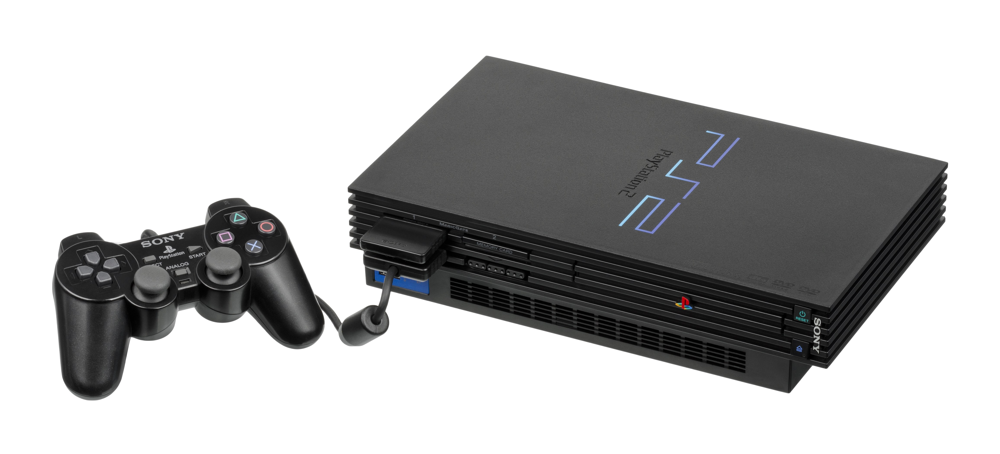

The Autopsy Report · Device #012
The PlayStation 2
The best-selling game console ever made — over 160 million of them. We haven't opened one yet, so this report is built from the public record: government filings, teardowns, and the silicon Sony bragged about.
What is this thing?
The PlayStation 2 is Sony's sixth-generation home game console and the best-selling game console in history, with more than 160 million units sold. Wikipedia It launched in Japan on March 4, 2000, reached North America that October, and stayed in production for thirteen years — one of the longest hardware runs the industry has ever seen.
This report covers the full family, from the chunky launch units (SCPH-30000 series) through the slim redesign (SCPH-70000 series, 2004) to the final slimline models (SCPH-90000 series). Under the hood: a custom CPU Sony called the Emotion Engine (about 295 MHz), a custom graphics chip called the Graphics Synthesizer, 32 MB of fast Rambus memory, and — the thing that quietly won the format war — a built-in DVD player at a time when standalone DVD players cost as much as the console. Wikipedia
Not yet on our bench
No unit of ours has been opened for this report. Everything below comes from public records: the manufacturers' own documents, independent teardowns, and the government paperwork. The public-record facts are as complete as we could make them; what awaits the bench is everything that requires our hands on our hardware — our own photos, our own measurements, a boot log, and confirmation of exactly which board revision our future unit carries. When a PS2 lands on the bench, the thin spots below are exactly where we'll start.
A short history
- March 4, 2000Sony launches the PlayStation 2 in Japan; North America follows on October 26. The SCPH-30000 series launch units are the "fat" models — deep, heavy, with an expansion bay for an optional hard drive. Wikipedia
- 2000 – 2001The PS2 doubles as the cheapest DVD player on the market, and DVD becomes the excuse millions of households use to buy one. The console and the movie format pull each other into the mainstream. Wikipedia
- 2004The slimline redesign arrives (SCPH-70000 series): dramatically smaller, quieter, with the power supply moved outside the box and the network adapter built in. Inside, Sony and Toshiba merge the Emotion Engine and Graphics Synthesizer onto a single chip. TechRepublic teardown
- 2007The final SCPH-90000 slimline series ships — the last revision of the hardware. Wikipedia
- 2013Sony discontinues the PlayStation 2 after thirteen years, ending the best-selling console run in history at over 160 million units. Wikipedia
The outside
The launch PS2 is a deep blue-black monolith, meant to stand vertically or lie flat, with a disc tray that slides out of the front. The slimline is the same idea at a quarter of the size. What the photo can't show: over the years the power supply moved from inside to outside, the fan got quieter, and the expansion bay vanished.

The board
Inside every PS2 is a single main board carrying the two custom chips that made the machine famous. On the original "fat" boards the Emotion Engine (CPU) and Graphics Synthesizer (GPU) sit as separate packages; public teardowns of the slim boards show them merged into one chip, a consolidation Sony and Toshiba made to shrink the design. TechRepublic teardown Around them: two Rambus memory chips totaling 32 MB, the optical-drive controller, and — on the slim — an integrated network section. The exact board revision, date codes, and silkscreen of our future unit are unknown until we open one ourselves.
Under the microscope: the chips
What's on the board, what each part does, and how sure we are. Confirmed means primary evidence only — an FCC exhibit, a manufacturer manual or datasheet, or an official announcement. Likely means corroborated secondary or public-teardown evidence. Board revisions differ across the SCPH range, so markings below are representative, not universal.
| Chip | What it does | How we know | Dig deeper |
|---|---|---|---|
| Emotion Engine ~294.9 MHz, 128-bit |
The CPU. Sony and Toshiba's custom design — the "heart" of the PS2. | Likely Named and photographed in public teardowns; clock speed per the technical literature. | Teardown (slim board) |
| Graphics Synthesizer | The GPU. Handles 2D/3D graphics with 4 MB of dedicated video memory. | Likely Same basis as above. | Technical overview |
| RDRAM, 32 MB two 128-Mbit chips |
The system's main memory — fast Rambus DRAM, the same family used in early Pentiums 4. | Likely Teardowns show the two RDRAM packages; Samsung and Hynix markings vary by revision. | Teardown (memory chips) |
| 4 MB embedded DRAM | Video memory sitting inside the Graphics Synthesizer package. | Likely Per the published technical specifications. | Technical overview |
Sony never published public datasheets for the Emotion Engine or the Graphics Synthesizer — custom console silicon almost never gets one. That's a documentation gap in the industry, not in the research. Also unverified for a specific unit until the bench: which revision's memory chips (Samsung vs. Hynix RDRAM), the optical-drive controller part number, and the network section on slim boards.
The government's file on this box
There isn't one — and the reason is instructive. The FCC's equipment-authorization system exists to keep radio transmitters from interfering with each other. The launch PS2 has no radio transmitter: no Wi-Fi, no Bluetooth (the slim's network port is wired Ethernet). So Sony certified the console under a Declaration of Conformity instead — a self-certification path for devices that don't intentionally radiate. No console-level FCC ID was ever issued, and no internal-photo filing exists. Background
One trap to avoid: you may see the FCC ID VCUAT8P51A1607 floating around in PS2 discussions. That's a third-party wireless controller, not the console — it tells you nothing about the box itself, and we excluded it. Absence of a filing here is normal, not suspicious: it means exactly what the rules say it means.
Debug and service modes
Sony never published a public recovery or service menu for the PlayStation 2. There is no button combination, in any official Sony documentation we could find, that boots a PS2 into a diagnostic or recovery screen the way later consoles do. (Repair communities have their own board-level techniques, but those are outside the scope of public documentation — and outside this report.) Until we have a unit on the bench, we can't say what, if anything, the hardware quietly offers.
What public records show
Taken together, the public record gives us the PS2's full biography: launch and discontinuation dates, the Emotion Engine / Graphics Synthesizer architecture, the memory configuration, the slim redesign's chip consolidation, and the regulatory posture (Declaration of Conformity, no console-level FCC ID). What it does not give us is anything that only exists inside a specific unit — board revision, date codes, serials, or how a thirteen-year production run drifted in component choices. That's the bench's job.
What we haven't done
- We haven't opened, photographed, or measured a PS2 of our own.
- We haven't captured a boot log or confirmed any debug port.
- We haven't verified which board revision our future unit will carry.
- We haven't tested any service procedure.
- The photo above is a freely licensed stock image, credited in full — not our hardware.
By the numbers
- Model range: SCPH-30000 through SCPH-90000 (launch "fat" through final slimline)
- FCC ID: none at console level — Declaration of Conformity (no radio transmitter)
- CPU: Emotion Engine, ~294.9 MHz, 128-bit
- GPU: Graphics Synthesizer, with 4 MB embedded DRAM
- Memory: 32 MB RDRAM
- Media: DVD-ROM / CD-ROM
- Launched: March 4, 2000 (Japan); October 26, 2000 (North America)
- Discontinued: 2013 — 13 years in production
- Units sold: over 160 million — the best-selling game console ever
Words to know
Every term this page uses, in plain English. No prior knowledge required.
- Emotion Engine
- Sony and Toshiba's custom CPU for the PS2. The name was marketing; the chip was real — a 128-bit design running at about 295 MHz.
- Graphics Synthesizer
- The PS2's custom graphics chip, with 4 MB of video memory built right into the package.
- RDRAM
- Rambus DRAM — a fast, expensive memory technology of the early 2000s, also used in some Pentium 4 PCs.
- Declaration of Conformity
- The FCC's self-certification path for electronic devices that don't intentionally transmit radio signals. No FCC ID is issued.
- FCC ID
- The ID the FCC assigns to each approved wireless product. Punch it into fccid.io and the whole public filing comes up. Devices with no radio don't get one.
- Slimline
- The redesigned, much smaller PS2 (2004 onward), which merged the two main chips onto one piece of silicon.
Sources & confidence
- Launch dates, discontinuation, sales figures, CPU/GPU/memory specifications: published technical overviews (secondary). Medium-high confidence; consistent across sources.
- Chip identities (Emotion Engine, Graphics Synthesizer, RDRAM): public teardowns with photographs. Medium-high confidence; markings vary by board revision.
- Regulatory posture (Declaration of Conformity, no console-level FCC ID; VCUAT8P51A1607 is a controller, not the console): researched; no contrary filing found. Medium confidence — framed as "no filing found," not proof of absence.
- No public datasheets exist for the custom Sony silicon. Stated as an industry documentation gap.
- Anything not listed here is unknown until the bench says otherwise. We'll say so, out loud, when that's the case.
We publish no firmware, serials, keys, or private data. This report uses only public records plus a freely licensed stock photo.
Legal note. BareBoard is an educational project. We don't publish, host, or distribute firmware, keys, passwords, or credentials. Product names and trademarks belong to their respective owners and appear here only to identify the hardware. If you believe anything here infringes your rights, contact us and we'll address it promptly.